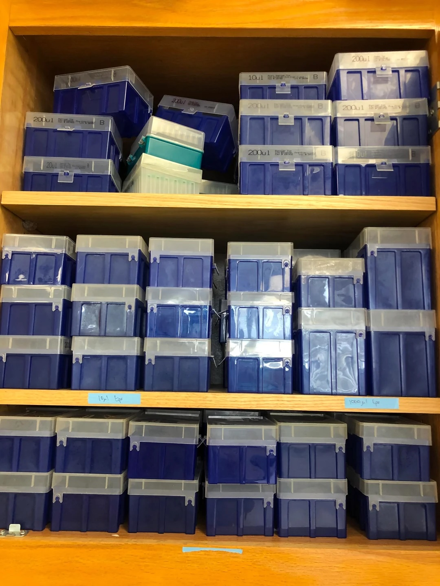

In the US, science funding is being cut, including the elimination of entire areas of study from federal funding. There are predictions of yet more reductions. This will affect what will be studied, who can study it, and even who survive diseases. Various individuals and groups are working to address this. I want to address just one small part of this where faculty still have (some) control: criteria we use in awarding tenure.
The standards for tenure can be opaque to various degrees: we all do teaching, research, and service, and institutions vary in how they weight each of these within the institution and across faculty members. Institutions vary in what constitutes evidence for each. For example, one person might teach a large number of intro classes and have peer evaluation of their teaching, while at a different institution someone may teach a few small enrollment classes and be evaluated on how well they are mentoring grad students. The AAUP has a survey of tenure practices, a quarter-century old book about best practices (probably due for some updating), and a page aggregating additional resources for those seeking to learn more.
But imagine if a department had a standard for tenure of using 10,000 pipette tips. Each time you finish a box of tips, you put an empty box against the wall: only 105 boxes total to get to tenure! Of course, this doesn’t work for people doing bird banding, or theoretical ecology, or any of a myriad of research programs. Pipette tips are a tool, not a goal. Within a narrow area they might be an okay proxy for productivity: back when I was sequencing ant DNA my pipette box accumulation rate could have been a good way to spot check how much time I was spending in the ant lab. But it would have been a terrible way to measure how much work I was spending coding new methods or writing papers. And using tips as a criterion could warp the research program: instead of banding birds, someone might have to change the research to do blood draws on captured birds to have a wet lab component, just in order to use enough tips to get tenure.

I suggest funding is the same. It is a tool that enables research, outreach, and more, but it isn’t the goal itself. It’s fantastically useful, of course. I’ve been lucky to work with 17 postdocs so far as a mentor, all of whom needed money for things like food and health care: about half the time, that came from grants I wrote, with the rest of the time coming from grants written by others (thanks, NSF, and the UTK team who wrote the NIMBioS (National Institute for Mathematical and Biological Synthesis) grant!). Other people need funding to pay for sequencing, or to fly to Costa Rica to collect insects, or to get a LI-COR to measure leaf respiration. And different research requires different amounts of funding – someone collecting fossils in the Arctic is not a better scientist than someone collecting fossils ten miles away from campus, but the former requires more money (and is generally less accessible to students). If both scientists are publishing good work at the same rate, why do we care that one person had to rent a helicopter and another a bicycle? It gets even more stark between fields: someone doing mathematical models may need far less funding than someone working on cancer research in a general biology department, and they also have access to different funding sources (at least historically, NIH provided more money than NSF), but the department is better for having both of them in the same place.
This is a time when there is even less reason to judge people by their funding. Federal funders and others have been cutting off funding for entire subfields. Faculty are pivoting their science to be able to keep doing work that matters. We want to encourage this: let them grow their research program and adapt to the changing world (this does not mean not trying to make improvements, but it does recognize external constraints). Having a performance standard that is based on the quality of science they are communicating makes sense. Adding a second metric, funding, warps that. In evolutionary biology, we teach about tradeoffs: armor is great, so is flight, but we don’t have flying armored turtles. Funding can serve the science, but making it a criterion in itself creates potential tradeoffs between the best science to do and the best science to get funding.
Suggested action item: Departments should have conversations about criteria for tenure, and explictly discuss, and put in writing, that funding is NOT one of those criteria. Ideally, this should be put into departmental bylaws. The end of the semester is a hard time for this, but faculty are going to be trying to figure out what to do this summer: giving them reassurance about optimizing just for good science will let them focus on this. For some, this will require figuring out funding, but not for all. When people come back together in the Fall, bylaws that mention funding should be amended, as well as similar work at higher levels of an institution. There might be work that correlates with funding (Has a faculty member been able to recruit and mentor grad students? Have they been able to develop modern, publishable datasets?) but the work is what we care about, not the funding itself.
What about indirect costs, startup, etc.?
An objection to ignoring funding as a criterion for tenure is that grants are ways to support other aspects of the university. It is worth digging into the details of this, though.
First, though it’s an imperfect analogy, it can be worth comparing a new lab to a new coffee shop. To start up a coffee shop, one needs to get a building, equipment, and supplies: everything from flour to make the donuts to a soap dispenser in the bathroom to cups for the coffee. Then one needs to hire and train staff. Only then can one open for business and start making money. For example, for a Starbucks, it costs $315,000 to license a store (which includes some equipment) and one must have $700,000 in cash for other costs. [Note I really wanted to find the similar cost for the far superior Dunkin’ Donuts instead, but it’s not available]. That’s the same order of magnitude as starting a biology lab at a research-intensive university, where startups in the hundreds of thousands of dollars are common.
One question any business owner has to face is how much to price each item. There’s the obvious cost of ingredients; there’s also the fractional cost of the employee that makes the coffee: a fancier coffee takes more time and so should cost more. But there are other costs that are harder to calculate. What fraction of a light bulb’s lifespan is used to illuminate the coffee station where the coffee is made? How much of the cash register’s overall cost is each cup of coffee responsible for? What about the person working the cash register? One way to do this would be to measure this exactly for everything: “hot tea” takes less time to say than “regular coffee black with two sugars” so the latter costs more of the cashier’s time. A different approach would be to figure out the obvious costs for the ingredients and direct labor, figure out all the other costs for the entire store, and find a ratio that makes it break even with a little extra for profit. For example, if a small cup of coffee costs $1.00 to make, add 50% to the cost of that to cover all the other costs and charge $1.50; maybe bump it up to $1.59 for a little profit.
The same applies for a lab. If one is proposing a project to sequence ant DNA to infer their phylogeny, there’s the cost to go to collect the ants in the field, the DNA extraction kits, PCR reagents, sequencing costs, and more. There’s the cost for the grad student to do the work (stipend, health care, and tuition). These are all calculated ahead of time and charged to the funder. But there are also all the other costs: someone to make sure the lab is run safely, having a building to do the work in, paying to run the -80 ˚C freezer, and more. Rather than figuring out these costs per project, the institution where the work happens negotiates with the federal government about the average overall costs. At a university, every $100 of direct cost might mean $50-60 in indirect costs, so that can be the negotiated rate. For institutions like children’s hospitals, it can be even higher, like 78% at Children’s Hospital Boston.
The thing is, the folk wisdom about this (backed by research: Holbrook and Sanberg (2013)) is that universities lose money on this. The indirect costs do not quite cover the cost of the research. In some ways, this is like athletics programs: they only rarely make money, but they help with brand recognition, student spirit, and more. Research is even more central to the mission of a university – universities are about generating new knowledge and sharing it, and funded research is a major part of this. Overall amount of research expenditure is also a metric used in rating or categorizing universities – it looks “good” by metrics some care about to have a lot of research expenditure.
Moreover, just in terms of earnings per square foot, research labs are a spectacularly bad way to make money. Take the University of Florida, a major research university. As of the latest data (2023), it had 3,884,000 square feet for research and engineering; it also spent (from external funds) $1,250,201,000, for an average of $322 per square foot. A Starbucks has sales of $700/sqft, McDonald’s $2196/sqft, an Apple store $25,000/sqft, and even Walmart is $407/sqft (from here, which is not peer-reviewed). And consider the cost to run a Walmart compared to a bunch of labs with the same total amount of square footage: Walmart has no fume hoods, no centrifuges, few expensive freezers, minimal computers, etc. and yet it only makes about 3% profit on this earnings per square foot. Walmart’s earnings for this space are 25% higher than what U. of Florida brings in with grants – it is hard to imagine U. of Florida is breaking even at this rate (and that is before proposed cuts in indirect rates). But the university is fostering great research that has both immediate impacts (helping citrus growers) and long-term discoveries (detecting wildlife with wisps of DNA in the ocean) while also training students and postdocs as part of its educational mission. And this sort of contribution is common for the thousands of universities across the US.
So, TL;DR: any university is likely losing money on research in general; given the high variance in how much funding different research groups bring in, it is likely that nearly all individual labs are overall subsidized by the university (the “Use AI to find people who are bad credit risks” or the “Patent a banana that stays yellow for months” labs might be exceptions). Many people, even from “successful” labs (based on grants), are not bringing in enough funding to break even, but they are worth the investment due to their discoveries. Our institutions at a high level realize that the research is what matters and focus on that. For those of us who are even closer to the research, in the same departments as those doing the work, we should similarly value the quality of the work, not the money or other tools used to help achieve it. We must put in structural changes to reassure our junior colleagues that we will evaluate their work, not their funding, especially now.
To subscribe, go to https://brianomeara.info/blog.xml in an RSS reader.
Citation
@online{o'meara2025,
author = {O’Meara, Brian},
title = {Funding for Tenure},
date = {2025-05-04},
url = {https://brianomeara.info/posts/fundingfortenure/},
langid = {en}
}